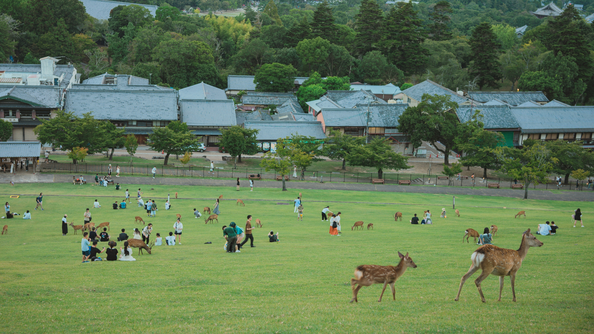

// CONTENTS

Itskushima Shrine
Itsukushima Shrine (厳島神社, Itsukushima-jinja) is a Shinto shrine on the island of Itsukushima (popularly known as Miyajima), best known for its "floating" torii.
Learn More

Nara Park
Nara Park (奈良公園, Nara Kōen) is a public park located in the city of Nara, Japan, at the foot of Mount Wakakusa. Established in 1880, it is one of the oldest parks in Japan.
Learn More

Nagoya Castle
Nagoya Castle (名古屋城, Nagoya-jō) is a Japanese castle located in Nagoya, Japan. It's constructed by the Owari Domain in 1612 during the Edo period on the site of an earlier castle of the Oda clan in the Sengoku period.
Learn More

Ehime Dōgo Onsen
Dōgo Onsen (道後温泉) is a hot spring in the city of Matsuyama, Ehime Prefecture on the island of Shikoku, Japan. It's is one of the oldest hot springs in Japan, with a history stretching back over 1000 years
Learn More

Rokuon-Ji
Kinkaku-ji (金閣寺; lit. 'Temple of the Golden Pavilion'), officially named Rokuon-ji (鹿苑寺; lit. 'Deer Garden Temple'), is a Zen Buddhist temple in Kyoto, Japan and a tourist attraction. It is designated as a World Heritage Site, a National Special Historic Site, a National Special Landscape, and one of the 17 Historic Monuments of Ancient Kyoto.
Learn More